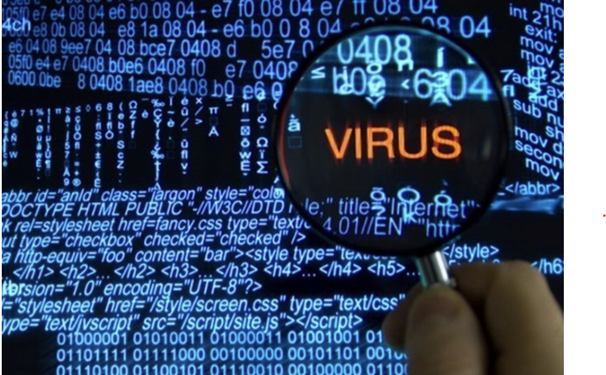

Detekcia
Detekcia

Definícia : prijanie predbežných opatrení znižujúce vznik bezpečnostných incidentov,
Medzi základné preventívne opatrenia patria:
- Detekcia v reálnom čase :
- Skenovanie skriptov
- Skenovanie príkazového riadka
- Skenovanie sieťových zložiek
- Skenovanie nových a zmenených súborov
- Skenovanie keyvlogeov
- Skenovanie pamäti.......
- Detekcia v rámci uložených dát - kontrola dát uložených na disku
späť